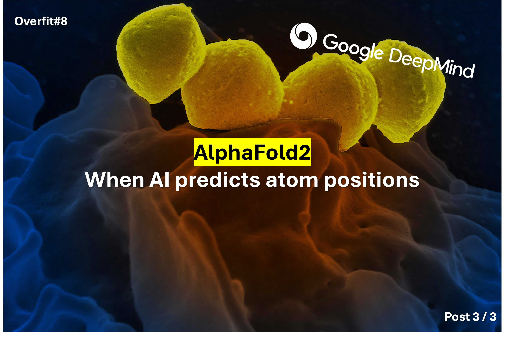
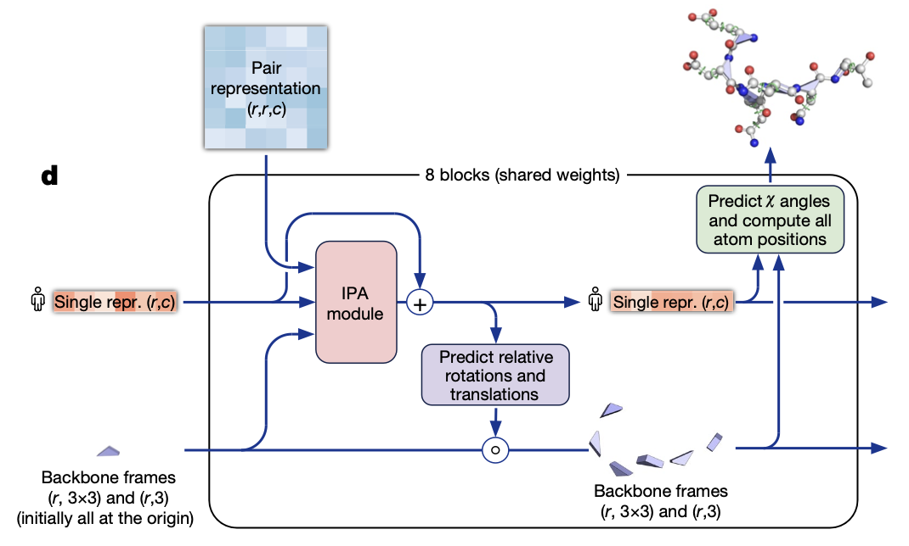
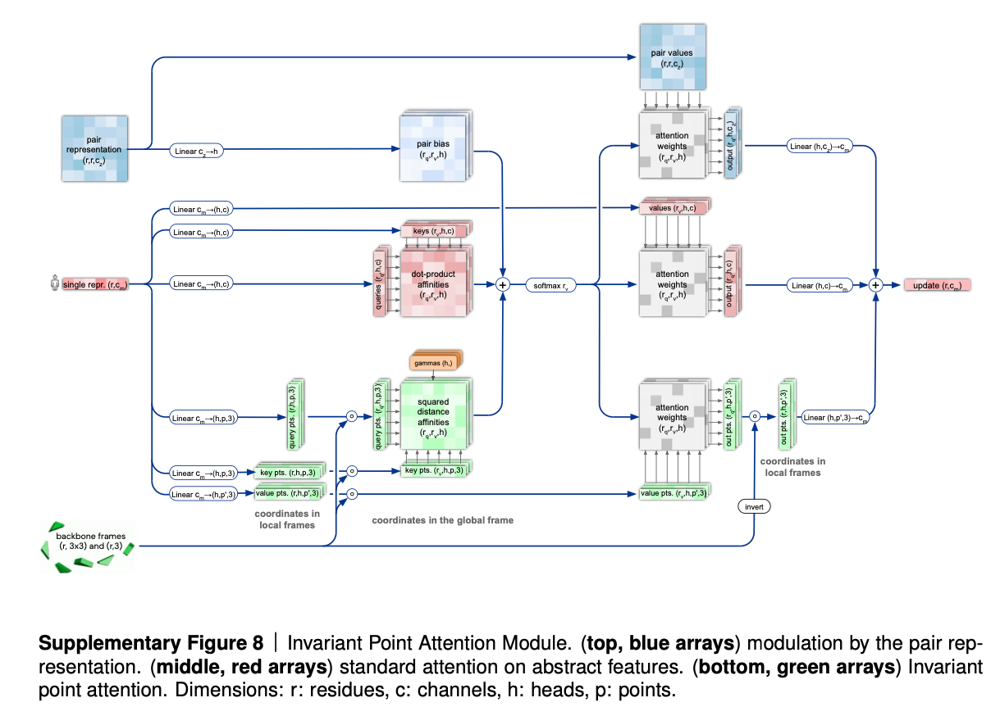
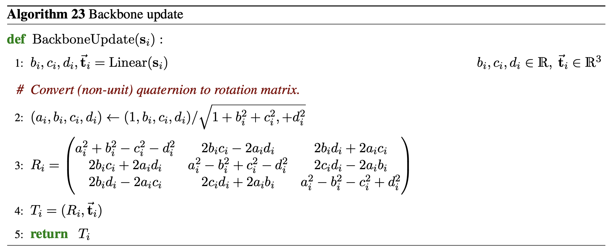
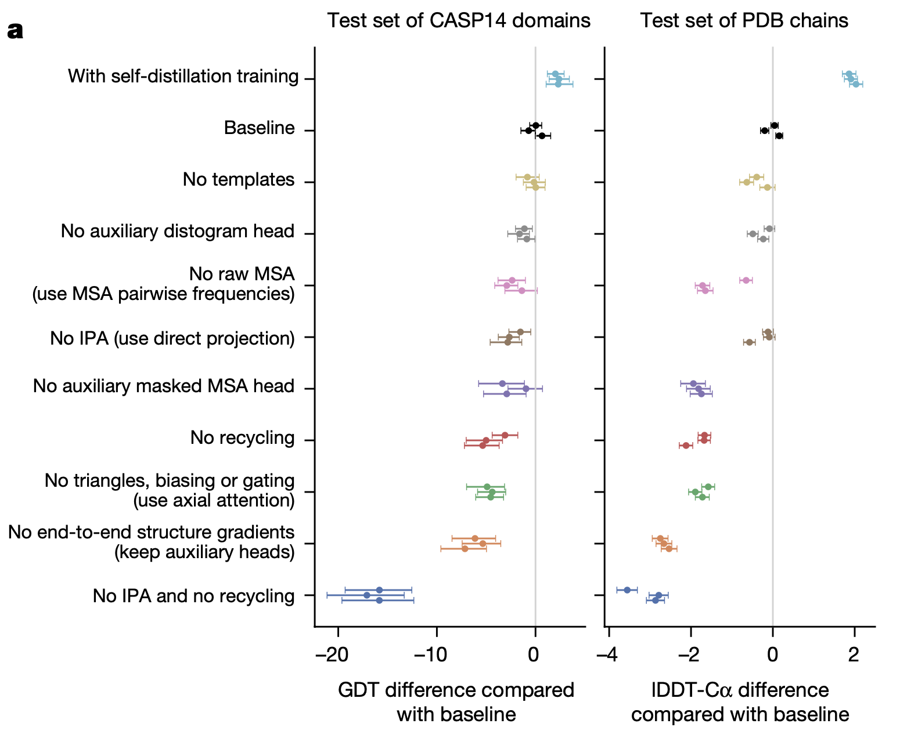

Overfit#8: AlphaFold2: The structure network

Before you start
This post is the third episode of a series about the AlphaFold21234 paper. If you haven't already, I highly recommend to read the previous posts first:
Problem formulation
It is now time to predict the structure of the protein. But what do we want to predict exactly?
The naive approach would be to train the network to predict the 3D coordinates of each atom in the protein. Yet the number of outputs \((N_{atoms} \times 3)\) would be huge, because a protein contains >10k atoms. Moreover, this approach is not translation/rotation invariant (for the model, a protein rotated is not the same, while it is the exact same problem).
Instead, AlphaFold2 predicts the position of residues relative to the previous residue. So the output of the network are the translations and rotations for each residue, in the local frame of its preceding neighbor. This also enforces that two consecutive residues are spatially close.
👉 To better understand, let's take a look at what a residue looks like.
It's all about translations and rotations
A protein is a linear sequence of residues. Each residue brings with 3 atoms (2 carbon + 1 nitrogen) to the backbone. But residues are not linear, they have also side chains, made of 4-5 carbon chains.
AlphaFold splits the structure prediction task into 2 steps:
1️⃣ First AF2 ignores the side chains and focuses on the residue backbone. It predicts the translation and the rotation to move from one residue to the next (blue triangles).
2️⃣ Second, the model refines its prediction. It considers the protein as a rigid body, whose only degrees of freedom are the 3 torsion angles of the backbone and the 4 torsion angles of the side chain, per residue.
👉 Ultimately, AlphaFold predicts the 7 angles for each residue. By composing the local transformations, we can then recover the 3D shape of the protein in the global frame.
👉 Now that we have a target, let's see how the structure network predicts it.
Structure network
The structure network is an 8-block submodule, with shared weights, that converts the pair-wise representation and the first row of the MSA representation into a 3D structure prediction.

We can split the structure prediction into 3 steps.
- The IPA module: an equivariant transformer that compresses information from the MSA, the pair representation and the backbone frames into one vector.
- The backbone structure prediction: This module updates the coarse guess of the protein backbone = task 1️⃣
- The atom-wise structure prediction: In this last module, AlphaFold refines its backbone prediction and predicts the angles of each residue side chain (denoted as \(\chi\) angles on the figure) = task 2️⃣.
IPA module
Warning
It sounds like a beer, but it's not. 🍺
The IPA - Invariant Point Attention - module is the engine of the structure network. It takes as inputs the 3 representations of the protein: the single MSA representation + the pair representation + the frames (the blue triangles). It returns an updated single representation embedding. This will serve as input to the predictors later.
In a nutshell, it is a classic global attention block, equivariant to global frame transformations (translations/rotations).
"The invariance with respect to the global reference frame in turn implies that applying a shared rigid motion to all residues, while keeping the embeddings fixed, will lead to the same update in the local frames"
- in red: classic global attention mechanism over the single representation.
- in blue: the pair representation biases the attention matrix, like in the Evoformer.
- in green: invariant point attention

To go further ...
If you are curious, check out this Medium post from Jude Wells: Invariant Point Attention in Alphafold 2 or the Supplementary paper (section 1.8.2).
Backbone prediction
After the single representation update by the IPA module, AlphaFold2 updates the backbone frames.
For the first iteration, all the frames are initialized with the identity transform (no translation, no rotation). Fun fact: This initialization is called the "black hole initialization", because all the residues are located at the same place. Then, as the prediction refines, the frames move to their final location and the protein structure appears.
The output of the backbone prediction module (in purple in the figure) is a quaternion for each residue. This quaternion is converted into a translation vector \((1, 3)\) and a rotation matrix \((3, 3)\) through standard maths:

Atom-wise prediction
In the end, a shallow ResNet predicts the \(\cos\) and \(\sin\) of each torsion angle. This approach avoids the discontinuity encountered with direct predictions in \([0, 2\pi]\). An auxiliary loss also encourages a unit norm of the raw vector.
Extra work is also required to disambiguate rigid groups that are symmetric, and for which multiple structures are acceptable equivalent solutions.
To get the 3D positions of the atoms, the predicted translations and rotations are finally composed to get 3D coordinates in the global frame.
Losses
To train AlphaFold2, the DeepMind's team came up with a multi-term loss function:
The main loss term is the FAPE, a homemade loss from DeepMind. The FAPE (Frame Aligned Point Error) assesses the atom coordinates and compares their distance to the ground truth, somehow like a L2 loss term. It also has some cool properties like non-invariance to reflection so it avoids creating proteins of the wrong chirality.
In theory, it should be the only loss term, but auxiliary losses were needed to achieve better/faster/more interpretable training. Each auxiliary loss has a purpose:
- \(\mathcal{L}_{aux}\) is a mixture of the FAPE and of the torsion angle loss over the intermediate results. It constrains the model prediction to converge fast.
- \(\mathcal{L}_{dist}\) is a distogram loss. It puts constraints on the distance between atoms, to make sure the pair representation is useful and meaningful.
- \(\mathcal{L}_{msa}\) is a BERT-like loss. It is an averaged cross-entropy loss for masked MSA prediction (the Evoformer is trained to complete some masked elements of the MSA during training).
- \(\mathcal{L}_{conf}\) is a small loss over the confidence level (pLDDT value) of the model. More on that in the Interpretability section.
Extra ideas
Noisy Student Distillation
AlphaFold2 is better thanks to its architecture, but also thanks to its data!
One major advantage of AlphaFold2 over the previous methods is that it leverages datasets of sequences with unknown structures. The technique is called self-distillation (not invented by the AF2 paper).
- Train a teacher model on labeled data
- Use the teacher to label unlabeled data
- Train a student model on the labeled data + the newly labeled data points with the highest confidence scores
- Repeat the process.
Thanks to self-distillation, AlphaFold2 trained on an additional 350k structures, i.e. 75% of the training dataset! Intuitively, one may think it would lead to model collapse, but the ablation study shows it boosts performance.

Interpretability
Additionally, the model is trained to estimate the error it makes for each residue frame. That's the last small auxiliary term in the loss \(\mathcal{L}_{conf}\), that compares the error to the predicted error.
I find it clever, because it provides some empirical estimation of how confident AlphaFold2 is about its prediction, for each residue. For instance, the authors observed a strong correlation between low plDDT scores and parts of the protein that have dynamic structures (and thus no clear ground truth).
Recycling
As mentioned earlier, AlphaFold is a sandwich of Evoformer blocks and Structure Network blocks. In practice, the network is called 3 times before. This recycling process helps the network to refine its prediction by iteratively refining the embeddings and the structure. If you are familiar with diffusion models, it's the same concept.
Conclusion
AlphaFold2's impact on the field makes no doubt: at CASP15, all best-performing models were improved versions of AF2.
But there is still room for improvement. A few weeks ago, DeepMind released Alphafold3, a new diffusion-based model that claims to outperform AF2 by a significant margin. I can't wait to dive into the paper ...
I only covered a small part of all the brilliant ideas of AlphaFold2. If you are looking for more, like how the data was processed or the engineering secrets of DeepMind, I definitively recommend the supplementary paper that comes with Nature's paper [^5]. It is long but rich!
👋 That's all for today. Feel free to share if you appreciate the content. And I see you in the next one!
-
Jumper, J., Evans, R., Pritzel, A. et al. Highly accurate protein structure prediction with AlphaFold. Nature 596, 583–589 (2021). https://doi.org/10.1038/s41586-021-03819-2 ↩
-
Heidelberg AI Talk 5th of May 2022 | Highly Accurate Protein Structure Prediction with AlphaFold | Simon Kohl, DeepMind. https://www.youtube.com/watch?v=tTN0MM2CQLU ↩
-
DeepMind website, AlphaFold technology: https://deepmind.google/technologies/alphafold/ ↩
-
Supplementary Information for: Highly accurate protein structure prediction with AlphaFold: https://static-content.springer.com/esm/art%3A10.1038%2Fs41586-021-03819-2/MediaObjects/41586_2021_3819_MOESM1_ESM.pdf ↩